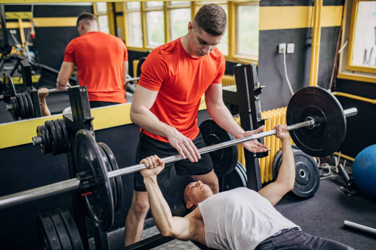

1. Incline Bench Press
My primary compound movement for chest, generally using a smith machine or dumbbells. Starting with an incline targets the upper chest and front delts while I have the most energy.
Chest, shoulders, and triceps training

My primary compound movement for chest, generally using a smith machine or dumbbells. Starting with an incline targets the upper chest and front delts while I have the most energy.
Done on a pec deck machine or cables after pressing. Focusing on a deep stretch at the bottom and a controlled squeeze at the top isolates the chest without the triceps taking over. This exercise can also be done using dumbbells, but I generally do not prefer that version over the other two.
I generally prefer overhead tricep extensions, but depending on equipment availability, I rotate between cable pushdowns and overhead extensions. Even though they still hit all of your tricep heads, overhead extensions are great for hitting the long head of the tricep.
Even though this is technically a pulling motion, I keep face pulls on push day to keep my pull days shorter and to warm up and balance the shoulder joint, hitting mainly the rear delts and part of the upper back for shoulder health.
Performed seated with dumbbells or a machine for stability. This builds overall pressing strength and front shoulder mass.
Essential for side delt width. I keep the weight moderate and avoid swinging my torso so the side delts do all the work.